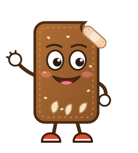
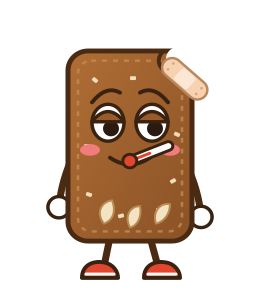
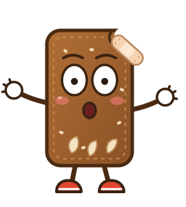
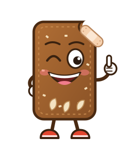
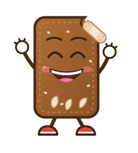
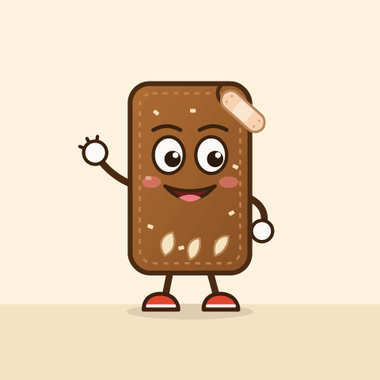

Printi explains the hospital
Hi, I'm Printi, a real Aachen Printe, the spiced gingerbread Aachen is famous for. I'll show you what it's like here at the children's hospital.

Who am I?
I'm Printi, an Aachen Printe with almonds. Someone once nibbled off one of my corners, so I wear a plaster. That means I know exactly what it's like when something hurts or you're ill. Here I'll show you what to expect.
Arriving
When you come to us, the doctors and nurses say hello first. They measure how tall and how heavy you are and listen to your heart with a stethoscope. They ask lots of questions. Mum, Dad or someone else you love stays with you the whole time.

Taking your temperature
We use a thermometer to check whether your body is too warm. It's very quick and doesn't hurt. [Add how the wards measure temperature, e.g. in the ear or under the arm]

The little prick
Sometimes we take a little blood to see what's going on inside your body. It pricks for a moment, a bit like a mosquito bite. Often you get a plaster with a cream beforehand that makes the skin a little numb. [check with the nurses when a numbing plaster is usual] Afterwards you get a plaster, just like me.
Ultrasound
With ultrasound we look inside your tummy with a small device, without any prick at all. A squishy gel goes on your skin, which is a bit cold and might tickle. You can watch on the screen.

What I pack
- Your favourite cuddly toy
- Pyjamas and slippers
- A book, a game or drawing things
- Your toothbrush
What the grown-ups should pack is under Your stay.
If you feel scared
That's completely normal. You can ask anything, even twice. And if something hurts, please tell us straight away. Even a Printe has to sneeze sometimes or loses an almond, and then things carry on.

And in between?
The hospital has a hospital school and playrooms, and sometimes a therapy dog even comes to visit.

[Agree texts with nursing, child psychology and parent representatives]